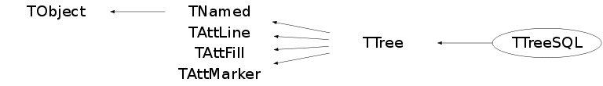

Function Members (Methods)
public:
| TTreeSQL(TSQLServer* server, TString DB, const TString& table) | |
| ~TTreeSQL() | |
| void | TObject::AbstractMethod(const char* method) const |
| virtual void | TTree::AddBranchToCache(const char* bname, Bool_t subbranches = kFALSE) |
| virtual void | TTree::AddBranchToCache(TBranch* branch, Bool_t subbranches = kFALSE) |
| virtual TFriendElement* | TTree::AddFriend(const char* treename, const char* filename = "") |
| virtual TFriendElement* | TTree::AddFriend(const char* treename, TFile* file) |
| virtual TFriendElement* | TTree::AddFriend(TTree* tree, const char* alias = "", Bool_t warn = kFALSE) |
| virtual void | TTree::AddTotBytes(Int_t tot) |
| virtual void | TTree::AddZipBytes(Int_t zip) |
| virtual void | TObject::AppendPad(Option_t* option = "") |
| virtual Long64_t | TTree::AutoSave(Option_t* option = "") |
| virtual Int_t | Branch(TList* list, Int_t bufsize = 32000, Int_t splitlevel = 99) |
| virtual Int_t | Branch(const char* folder, Int_t bufsize = 32000, Int_t splitlevel = 99) |
| virtual Int_t | Branch(TCollection* list, Int_t bufsize = 32000, Int_t splitlevel = 99, const char* name = "") |
| virtual TBranch* | Branch(const char* name, void* address, const char* leaflist, Int_t bufsize) |
| virtual TBranch* | BranchOld(const char* name, const char* classname, void* addobj, Int_t bufsize = 32000, Int_t splitlevel = 1) |
| virtual TBranch* | TTree::BranchRef() |
| virtual TBranch* | Bronch(const char* name, const char* classname, void* addobj, Int_t bufsize = 32000, Int_t splitlevel = 99) |
| virtual void | TTree::Browse(TBrowser*) |
| virtual Int_t | TTree::BuildIndex(const char* majorname, const char* minorname = "0") |
| TStreamerInfo* | TTree::BuildStreamerInfo(TClass* cl, void* pointer = 0, Bool_t canOptimize = kTRUE) |
| virtual TFile* | TTree::ChangeFile(TFile* file) |
| static TClass* | Class() |
| virtual const char* | TObject::ClassName() const |
| virtual void | TNamed::Clear(Option_t* option = "") |
| virtual TObject* | TNamed::Clone(const char* newname = "") const |
| virtual TTree* | TTree::CloneTree(Long64_t nentries = -1, Option_t* option = "") |
| virtual Int_t | TNamed::Compare(const TObject* obj) const |
| virtual void | TNamed::Copy(TObject& named) const |
| virtual void | TTree::CopyAddresses(TTree*, Bool_t undo = kFALSE) |
| virtual Long64_t | TTree::CopyEntries(TTree* tree, Long64_t nentries = -1, Option_t* option = "") |
| virtual TTree* | TTree::CopyTree(const char* selection, Option_t* option = "", Long64_t nentries = 1000000000, Long64_t firstentry = 0) |
| Int_t | TTree::Debug() const |
| virtual void | TTree::Delete(Option_t* option = "")MENU |
| virtual void | TTree::DirectoryAutoAdd(TDirectory*) |
| Int_t | TAttLine::DistancetoLine(Int_t px, Int_t py, Double_t xp1, Double_t yp1, Double_t xp2, Double_t yp2) |
| virtual Int_t | TObject::DistancetoPrimitive(Int_t px, Int_t py) |
| virtual void | TTree::Draw(Option_t* opt) |
| virtual Long64_t | TTree::Draw(const char* varexp, const TCut& selection, Option_t* option = "", Long64_t nentries = 1000000000, Long64_t firstentry = 0) |
| virtual Long64_t | TTree::Draw(const char* varexp, const char* selection, Option_t* option = "", Long64_t nentries = 1000000000, Long64_t firstentry = 0)MENU |
| virtual void | TObject::DrawClass() constMENU |
| virtual TObject* | TObject::DrawClone(Option_t* option = "") constMENU |
| virtual void | TTree::DropBaskets() |
| virtual void | TTree::DropBranchFromCache(const char* bname, Bool_t subbranches = kFALSE) |
| virtual void | TTree::DropBranchFromCache(TBranch* branch, Bool_t subbranches = kFALSE) |
| virtual void | TTree::DropBuffers(Int_t nbytes) |
| virtual void | TObject::Dump() constMENU |
| virtual void | TObject::Error(const char* method, const char* msgfmt) const |
| virtual void | TObject::Execute(const char* method, const char* params, Int_t* error = 0) |
| virtual void | TObject::Execute(TMethod* method, TObjArray* params, Int_t* error = 0) |
| virtual void | TObject::ExecuteEvent(Int_t event, Int_t px, Int_t py) |
| virtual void | TObject::Fatal(const char* method, const char* msgfmt) const |
| virtual Int_t | Fill() |
| virtual void | TNamed::FillBuffer(char*& buffer) |
| virtual TBranch* | TTree::FindBranch(const char* name) |
| virtual TLeaf* | TTree::FindLeaf(const char* name) |
| virtual TObject* | TObject::FindObject(const char* name) const |
| virtual TObject* | TObject::FindObject(const TObject* obj) const |
| virtual Int_t | TTree::Fit(const char* funcname, const char* varexp, const char* selection = "", Option_t* option = "", Option_t* goption = "", Long64_t nentries = 1000000000, Long64_t firstentry = 0)MENU |
| virtual Int_t | TTree::FlushBaskets() const |
| virtual const char* | TTree::GetAlias(const char* aliasName) const |
| virtual Long64_t | TTree::GetAutoFlush() const |
| virtual Long64_t | TTree::GetAutoSave() const |
| virtual TBranch* | TTree::GetBranch(const char* name) |
| virtual TBranchRef* | TTree::GetBranchRef() const |
| virtual Bool_t | TTree::GetBranchStatus(const char* branchname) const |
| static Int_t | TTree::GetBranchStyle() |
| virtual Long64_t | TTree::GetCacheSize() const |
| virtual Long64_t | TTree::GetChainEntryNumber(Long64_t entry) const |
| virtual Long64_t | TTree::GetChainOffset() const |
| virtual TTree::TClusterIterator | TTree::GetClusterIterator(Long64_t firstentry) |
| TFile* | TTree::GetCurrentFile() const |
| Long64_t | TTree::GetDebugMax() const |
| Long64_t | TTree::GetDebugMin() const |
| Int_t | TTree::GetDefaultEntryOffsetLen() const |
| TDirectory* | TTree::GetDirectory() const |
| virtual Option_t* | TObject::GetDrawOption() const |
| static Long_t | TObject::GetDtorOnly() |
| virtual Long64_t | GetEntries() const |
| virtual Long64_t | GetEntries(const char* sel) |
| virtual Long64_t | GetEntriesFast() const |
| virtual Long64_t | TTree::GetEntriesFriend() const |
| virtual Int_t | GetEntry(Long64_t entry = 0, Int_t getall = 0) |
| virtual TEntryList* | TTree::GetEntryList() |
| virtual Long64_t | TTree::GetEntryNumber(Long64_t entry) const |
| virtual Long64_t | TTree::GetEntryNumberWithBestIndex(Int_t major, Int_t minor = 0) const |
| virtual Long64_t | TTree::GetEntryNumberWithIndex(Int_t major, Int_t minor = 0) const |
| virtual Int_t | TTree::GetEntryWithIndex(Int_t major, Int_t minor = 0) |
| virtual Long64_t | TTree::GetEstimate() const |
| Int_t | TTree::GetEvent(Long64_t entry = 0, Int_t getall = 0) |
| TEventList* | TTree::GetEventList() const |
| virtual Int_t | TTree::GetFileNumber() const |
| virtual Color_t | TAttFill::GetFillColor() const |
| virtual Style_t | TAttFill::GetFillStyle() const |
| virtual TTree* | TTree::GetFriend(const char*) const |
| virtual const char* | TTree::GetFriendAlias(TTree*) const |
| TH1* | TTree::GetHistogram() |
| virtual const char* | TObject::GetIconName() const |
| virtual Int_t* | TTree::GetIndex() |
| virtual Double_t* | TTree::GetIndexValues() |
| virtual TIterator* | TTree::GetIteratorOnAllLeaves(Bool_t dir = kIterForward) |
| virtual TLeaf* | TTree::GetLeaf(const char* name) |
| virtual TLeaf* | TTree::GetLeaf(const char* branchname, const char* leafname) |
| virtual Color_t | TAttLine::GetLineColor() const |
| virtual Style_t | TAttLine::GetLineStyle() const |
| virtual Width_t | TAttLine::GetLineWidth() const |
| virtual TList* | TTree::GetListOfAliases() const |
| virtual TObjArray* | TTree::GetListOfBranches() |
| virtual TList* | TTree::GetListOfClones() |
| virtual TList* | TTree::GetListOfFriends() const |
| virtual TObjArray* | TTree::GetListOfLeaves() |
| Int_t | TTree::GetMakeClass() const |
| virtual Color_t | TAttMarker::GetMarkerColor() const |
| virtual Size_t | TAttMarker::GetMarkerSize() const |
| virtual Style_t | TAttMarker::GetMarkerStyle() const |
| virtual Long64_t | TTree::GetMaxEntryLoop() const |
| virtual Double_t | TTree::GetMaximum(const char* columname) |
| static Long64_t | TTree::GetMaxTreeSize() |
| virtual Long64_t | TTree::GetMaxVirtualSize() const |
| virtual Double_t | TTree::GetMinimum(const char* columname) |
| virtual const char* | TNamed::GetName() const |
| virtual Int_t | TTree::GetNbranches() |
| TObject* | TTree::GetNotify() const |
| virtual char* | TObject::GetObjectInfo(Int_t px, Int_t py) const |
| static Bool_t | TObject::GetObjectStat() |
| virtual Option_t* | TObject::GetOption() const |
| virtual Int_t | TTree::GetPacketSize() const |
| TVirtualTreePlayer* | TTree::GetPlayer() |
| virtual Long64_t | TTree::GetReadEntry() const |
| virtual Long64_t | TTree::GetReadEvent() const |
| virtual Int_t | TTree::GetScanField() const |
| TTreeFormula* | TTree::GetSelect() |
| virtual Long64_t | TTree::GetSelectedRows() |
| TString | GetTableName() |
| virtual Int_t | TTree::GetTimerInterval() const |
| virtual const char* | TNamed::GetTitle() const |
| virtual Long64_t | TTree::GetTotBytes() const |
| TBuffer* | TTree::GetTransientBuffer(Int_t size) |
| virtual TTree* | TTree::GetTree() const |
| virtual TVirtualIndex* | TTree::GetTreeIndex() const |
| virtual Int_t | TTree::GetTreeNumber() const |
| virtual UInt_t | TObject::GetUniqueID() const |
| virtual Int_t | TTree::GetUpdate() const |
| virtual TList* | TTree::GetUserInfo() |
| virtual Double_t* | TTree::GetV1() |
| virtual Double_t* | TTree::GetV2() |
| virtual Double_t* | TTree::GetV3() |
| virtual Double_t* | TTree::GetV4() |
| virtual Double_t* | TTree::GetVal(Int_t i) |
| TTreeFormula* | TTree::GetVar(Int_t i) |
| TTreeFormula* | TTree::GetVar1() |
| TTreeFormula* | TTree::GetVar2() |
| TTreeFormula* | TTree::GetVar3() |
| TTreeFormula* | TTree::GetVar4() |
| virtual Double_t* | TTree::GetW() |
| virtual Double_t | TTree::GetWeight() const |
| virtual Long64_t | TTree::GetZipBytes() const |
| virtual Bool_t | TObject::HandleTimer(TTimer* timer) |
| virtual ULong_t | TNamed::Hash() const |
| virtual void | TTree::IncrementTotalBuffers(Int_t nbytes) |
| virtual void | TObject::Info(const char* method, const char* msgfmt) const |
| virtual Bool_t | TObject::InheritsFrom(const char* classname) const |
| virtual Bool_t | TObject::InheritsFrom(const TClass* cl) const |
| virtual void | TObject::Inspect() constMENU |
| void | TObject::InvertBit(UInt_t f) |
| virtual TClass* | IsA() const |
| virtual Bool_t | TObject::IsEqual(const TObject* obj) const |
| virtual Bool_t | TTree::IsFolder() const |
| Bool_t | TObject::IsOnHeap() const |
| virtual Bool_t | TNamed::IsSortable() const |
| virtual Bool_t | TAttFill::IsTransparent() const |
| Bool_t | TObject::IsZombie() const |
| virtual Int_t | TTree::LoadBaskets(Long64_t maxmemory = 2000000000) |
| virtual Long64_t | LoadTree(Long64_t entry) |
| virtual Long64_t | TTree::LoadTreeFriend(Long64_t entry, TTree* T) |
| virtual void | TNamed::ls(Option_t* option = "") const |
| virtual Int_t | TTree::MakeClass(const char* classname = 0, Option_t* option = "") |
| virtual Int_t | TTree::MakeCode(const char* filename = 0) |
| virtual Int_t | TTree::MakeProxy(const char* classname, const char* macrofilename = 0, const char* cutfilename = 0, const char* option = 0, Int_t maxUnrolling = 3) |
| virtual Int_t | TTree::MakeSelector(const char* selector = 0) |
| void | TObject::MayNotUse(const char* method) const |
| Bool_t | TTree::MemoryFull(Int_t nbytes) |
| virtual Long64_t | TTree::Merge(TCollection* list, Option_t* option = "") |
| virtual Long64_t | TTree::Merge(TCollection* list, TFileMergeInfo* info) |
| static TTree* | TTree::MergeTrees(TList* list, Option_t* option = "") |
| virtual void | TAttLine::Modify() |
| virtual Bool_t | TTree::Notify() |
| void | TObject::Obsolete(const char* method, const char* asOfVers, const char* removedFromVers) const |
| static void | TObject::operator delete(void* ptr) |
| static void | TObject::operator delete(void* ptr, void* vp) |
| static void | TObject::operator delete[](void* ptr) |
| static void | TObject::operator delete[](void* ptr, void* vp) |
| void* | TObject::operator new(size_t sz) |
| void* | TObject::operator new(size_t sz, void* vp) |
| void* | TObject::operator new[](size_t sz) |
| void* | TObject::operator new[](size_t sz, void* vp) |
| TNamed& | TNamed::operator=(const TNamed& rhs) |
| virtual void | TTree::OptimizeBaskets(ULong64_t maxMemory = 10000000, Float_t minComp = 1.1, Option_t* option = "") |
| virtual void | TObject::Paint(Option_t* option = "") |
| virtual void | TObject::Pop() |
| virtual Long64_t | PrepEntry(Long64_t entry) |
| TPrincipal* | TTree::Principal(const char* varexp = "", const char* selection = "", Option_t* option = "np", Long64_t nentries = 1000000000, Long64_t firstentry = 0) |
| virtual void | TTree::Print(Option_t* option = "") constMENU |
| virtual void | TTree::PrintCacheStats(Option_t* option = "") const |
| virtual Long64_t | TTree::Process(const char* filename, Option_t* option = "", Long64_t nentries = 1000000000, Long64_t firstentry = 0)MENU |
| virtual Long64_t | TTree::Process(void* selector, Option_t* option = "", Long64_t nentries = 1000000000, Long64_t firstentry = 0) |
| virtual Long64_t | TTree::Project(const char* hname, const char* varexp, const char* selection = "", Option_t* option = "", Long64_t nentries = 1000000000, Long64_t firstentry = 0) |
| virtual TSQLResult* | TTree::Query(const char* varexp = "", const char* selection = "", Option_t* option = "", Long64_t nentries = 1000000000, Long64_t firstentry = 0) |
| virtual Int_t | TObject::Read(const char* name) |
| virtual Long64_t | TTree::ReadFile(const char* filename, const char* branchDescriptor = "", char delimiter = ' ') |
| virtual Long64_t | TTree::ReadStream(istream& inputStream, const char* branchDescriptor = "", char delimiter = ' ') |
| virtual void | TTree::RecursiveRemove(TObject* obj) |
| virtual void | Refresh() |
| virtual void | TTree::RemoveFriend(TTree*) |
| virtual void | TTree::Reset(Option_t* option = "") |
| virtual void | TTree::ResetAfterMerge(TFileMergeInfo*) |
| virtual void | TAttFill::ResetAttFill(Option_t* option = "") |
| virtual void | TAttLine::ResetAttLine(Option_t* option = "") |
| virtual void | TAttMarker::ResetAttMarker(Option_t* toption = "") |
| void | TObject::ResetBit(UInt_t f) |
| virtual void | TTree::ResetBranchAddress(TBranch*) |
| virtual void | TTree::ResetBranchAddresses() |
| virtual void | TObject::SaveAs(const char* filename = "", Option_t* option = "") constMENU |
| virtual void | TAttFill::SaveFillAttributes(ostream& out, const char* name, Int_t coldef = 1, Int_t stydef = 1001) |
| virtual void | TAttLine::SaveLineAttributes(ostream& out, const char* name, Int_t coldef = 1, Int_t stydef = 1, Int_t widdef = 1) |
| virtual void | TAttMarker::SaveMarkerAttributes(ostream& out, const char* name, Int_t coldef = 1, Int_t stydef = 1, Int_t sizdef = 1) |
| virtual void | TObject::SavePrimitive(ostream& out, Option_t* option = "") |
| virtual Long64_t | TTree::Scan(const char* varexp = "", const char* selection = "", Option_t* option = "", Long64_t nentries = 1000000000, Long64_t firstentry = 0)MENU |
| virtual Bool_t | TTree::SetAlias(const char* aliasName, const char* aliasFormula) |
| virtual void | TTree::SetAutoFlush(Long64_t autof = 30000000) |
| virtual void | TTree::SetAutoSave(Long64_t autos = 300000000) |
| virtual void | TTree::SetBasketSize(const char* bname, Int_t buffsize = 16000) |
| void | TObject::SetBit(UInt_t f) |
| void | TObject::SetBit(UInt_t f, Bool_t set) |
| Int_t | TTree::SetBranchAddress(const char* bname, void** add, TBranch** ptr = 0) |
| virtual Int_t | TTree::SetBranchAddress(const char* bname, void* add, TClass* realClass, EDataType datatype, Bool_t isptr) |
| virtual Int_t | TTree::SetBranchAddress(const char* bname, void* add, TBranch** ptr, TClass* realClass, EDataType datatype, Bool_t isptr) |
| virtual void | TTree::SetBranchStatus(const char* bname, Bool_t status = 1, UInt_t* found = 0) |
| static void | TTree::SetBranchStyle(Int_t style = 1) |
| virtual void | TTree::SetCacheEntryRange(Long64_t first, Long64_t last) |
| virtual void | TTree::SetCacheLearnEntries(Int_t n = 10) |
| virtual void | TTree::SetCacheSize(Long64_t cachesize = -1) |
| virtual void | TTree::SetChainOffset(Long64_t offset = 0) |
| virtual void | TTree::SetCircular(Long64_t maxEntries) |
| virtual void | TTree::SetDebug(Int_t level = 1, Long64_t min = 0, Long64_t max = 9999999)MENU |
| virtual void | TTree::SetDefaultEntryOffsetLen(Int_t newdefault, Bool_t updateExisting = kFALSE) |
| virtual void | TTree::SetDirectory(TDirectory* dir) |
| virtual void | TObject::SetDrawOption(Option_t* option = "")MENU |
| static void | TObject::SetDtorOnly(void* obj) |
| virtual Long64_t | TTree::SetEntries(Long64_t n = -1) |
| virtual void | TTree::SetEntryList(TEntryList* list, Option_t* opt = "") |
| virtual void | TTree::SetEstimate(Long64_t nentries = 10000) |
| virtual void | TTree::SetEventList(TEventList* list) |
| virtual void | TTree::SetFileNumber(Int_t number = 0) |
| virtual void | TAttFill::SetFillAttributes()MENU |
| virtual void | TAttFill::SetFillColor(Color_t fcolor) |
| virtual void | TAttFill::SetFillStyle(Style_t fstyle) |
| virtual void | TAttLine::SetLineAttributes()MENU |
| virtual void | TAttLine::SetLineColor(Color_t lcolor) |
| virtual void | TAttLine::SetLineStyle(Style_t lstyle) |
| virtual void | TAttLine::SetLineWidth(Width_t lwidth) |
| virtual void | TTree::SetMakeClass(Int_t make) |
| virtual void | TAttMarker::SetMarkerAttributes()MENU |
| virtual void | TAttMarker::SetMarkerColor(Color_t tcolor = 1) |
| virtual void | TAttMarker::SetMarkerSize(Size_t msize = 1) |
| virtual void | TAttMarker::SetMarkerStyle(Style_t mstyle = 1) |
| virtual void | TTree::SetMaxEntryLoop(Long64_t maxev = 1000000000)MENU |
| static void | TTree::SetMaxTreeSize(Long64_t maxsize = 1900000000) |
| virtual void | TTree::SetMaxVirtualSize(Long64_t size = 0)MENU |
| virtual void | TTree::SetName(const char* name)MENU |
| virtual void | TNamed::SetNameTitle(const char* name, const char* title) |
| virtual void | TTree::SetNotify(TObject* obj) |
| virtual void | TTree::SetObject(const char* name, const char* title) |
| static void | TObject::SetObjectStat(Bool_t stat) |
| virtual void | TTree::SetParallelUnzip(Bool_t opt = kTRUE, Float_t RelSize = -1) |
| virtual void | TTree::SetScanField(Int_t n = 50)MENU |
| virtual void | TTree::SetTimerInterval(Int_t msec = 333) |
| virtual void | TNamed::SetTitle(const char* title = "")MENU |
| virtual void | TTree::SetTreeIndex(TVirtualIndex* index) |
| virtual void | TObject::SetUniqueID(UInt_t uid) |
| virtual void | TTree::SetUpdate(Int_t freq = 0) |
| virtual void | TTree::SetWeight(Double_t w = 1, Option_t* option = "") |
| virtual void | TTree::Show(Long64_t entry = -1, Int_t lenmax = 20) |
| virtual void | ShowMembers(TMemberInspector& insp) |
| virtual Int_t | TNamed::Sizeof() const |
| virtual void | TTree::StartViewer()MENU |
| virtual void | TTree::StopCacheLearningPhase() |
| virtual void | Streamer(TBuffer& b) |
| void | StreamerNVirtual(TBuffer& b) |
| virtual void | TObject::SysError(const char* method, const char* msgfmt) const |
| Bool_t | TObject::TestBit(UInt_t f) const |
| Int_t | TObject::TestBits(UInt_t f) const |
| virtual Int_t | TTree::UnbinnedFit(const char* funcname, const char* varexp, const char* selection = "", Option_t* option = "", Long64_t nentries = 1000000000, Long64_t firstentry = 0) |
| virtual void | TTree::UseCurrentStyle() |
| virtual void | TObject::Warning(const char* method, const char* msgfmt) const |
| virtual Int_t | TTree::Write(const char* name = 0, Int_t option = 0, Int_t bufsize = 0) |
| virtual Int_t | TTree::Write(const char* name = 0, Int_t option = 0, Int_t bufsize = 0) const |
protected:
| void | TTree::AddClone(TTree*) |
| virtual TBranch* | BranchImp(const char* branchname, TClass* ptrClass, void* addobj, Int_t bufsize, Int_t splitlevel) |
| virtual TBranch* | BranchImp(const char* branchname, const char* classname, TClass* ptrClass, void* addobj, Int_t bufsize, Int_t splitlevel) |
| virtual TBranch* | TTree::BranchImpRef(const char* branchname, const char* classname, TClass* ptrClass, void* addobj, Int_t bufsize, Int_t splitlevel) |
| virtual TBranch* | TTree::BranchImpRef(const char* branchname, TClass* ptrClass, EDataType datatype, void* addobj, Int_t bufsize, Int_t splitlevel) |
| virtual TBranch* | TTree::BronchExec(const char* name, const char* classname, void* addobj, Bool_t isptrptr, Int_t bufsize, Int_t splitlevel) |
| void | CheckBasket(TBranch* tb) |
| Bool_t | CheckBranch(TBranch* tb) |
| virtual Int_t | TTree::CheckBranchAddressType(TBranch* branch, TClass* ptrClass, EDataType datatype, Bool_t ptr) |
| Bool_t | CheckTable(const TString& table) const |
| TString | ConvertTypeName(const TString& typeName) |
| virtual TBasket* | CreateBasket(TBranch* br) |
| virtual void | CreateBranch(const TString& branchName, const TString& typeName) |
| TString | CreateBranches(TSQLResult* rs) |
| Bool_t | CreateTable(const TString& table) |
| virtual void | TObject::DoError(int level, const char* location, const char* fmt, va_list va) const |
| vector<Int_t>* | GetColumnIndice(TBranch* branch) |
| virtual TLeaf* | TTree::GetLeafImpl(const char* branchname, const char* leafname) |
| char | TTree::GetNewlineValue(istream& inputStream) |
| void | TTree::ImportClusterRanges(TTree* fromtree) |
| void | Init() |
| virtual void | TTree::KeepCircular() |
| void | TObject::MakeZombie() |
| void | ResetQuery() |
| Int_t | TTree::SetBranchAddressImp(TBranch* branch, void* addr, TBranch** ptr) |
Data Members
public:
| enum TTree::ELockStatusBits { | kFindBranch | |
| kFindLeaf | ||
| kGetAlias | ||
| kGetBranch | ||
| kGetEntry | ||
| kGetEntryWithIndex | ||
| kGetFriend | ||
| kGetFriendAlias | ||
| kGetLeaf | ||
| kLoadTree | ||
| kPrint | ||
| kRemoveFriend | ||
| kSetBranchStatus | ||
| }; | ||
| enum TTree::SetBranchAddressStatus { | kMissingBranch | |
| kInternalError | ||
| kMissingCompiledCollectionProxy | ||
| kMismatch | ||
| kClassMismatch | ||
| kMatch | ||
| kMatchConversion | ||
| kMatchConversionCollection | ||
| kMakeClass | ||
| kVoidPtr | ||
| kNoCheck | ||
| }; | ||
| enum TTree::[unnamed] { | kForceRead | |
| kCircular | ||
| kSplitCollectionOfPointers | ||
| }; | ||
| enum TObject::EStatusBits { | kCanDelete | |
| kMustCleanup | ||
| kObjInCanvas | ||
| kIsReferenced | ||
| kHasUUID | ||
| kCannotPick | ||
| kNoContextMenu | ||
| kInvalidObject | ||
| }; | ||
| enum TObject::[unnamed] { | kIsOnHeap | |
| kNotDeleted | ||
| kZombie | ||
| kBitMask | ||
| kSingleKey | ||
| kOverwrite | ||
| kWriteDelete | ||
| }; |
protected:
| TList* | TTree::fAliases | List of aliases for expressions based on the tree branches. |
| Long64_t | TTree::fAutoFlush | Autoflush tree when fAutoFlush entries written |
| Long64_t | TTree::fAutoSave | Autosave tree when fAutoSave bytes produced |
| Bool_t | fBranchChecked | |
| TBranchRef* | TTree::fBranchRef | Branch supporting the TRefTable (if any) |
| TObjArray | TTree::fBranches | List of Branches |
| Long64_t | TTree::fCacheSize | ! Maximum size of file buffers |
| Long64_t | TTree::fChainOffset | ! Offset of 1st entry of this Tree in a TChain |
| TList* | TTree::fClones | ! List of cloned trees which share our addresses |
| Long64_t* | TTree::fClusterRangeEnd | [fNClusterRange] Last entry of a cluster range. |
| Long64_t* | TTree::fClusterSize | [fNClusterRange] Number of entries in each cluster for a given range. |
| Int_t | fCurrentEntry | |
| TString | fDB | |
| Int_t | TTree::fDebug | ! Debug level |
| Long64_t | TTree::fDebugMax | ! Last entry number to debug |
| Long64_t | TTree::fDebugMin | ! First entry number to debug |
| Int_t | TTree::fDefaultEntryOffsetLen | Initial Length of fEntryOffset table in the basket buffers |
| TDirectory* | TTree::fDirectory | ! Pointer to directory holding this tree |
| Long64_t | TTree::fEntries | Number of entries |
| TEntryList* | TTree::fEntryList | ! Pointer to event selection list (if one) |
| Long64_t | TTree::fEstimate | Number of entries to estimate histogram limits |
| TEventList* | TTree::fEventList | ! Pointer to event selection list (if one) |
| Int_t | TTree::fFileNumber | ! current file number (if file extensions) |
| Color_t | TAttFill::fFillColor | fill area color |
| Style_t | TAttFill::fFillStyle | fill area style |
| Long64_t | TTree::fFlushedBytes | Number of autoflushed bytes |
| UInt_t | TTree::fFriendLockStatus | ! Record which method is locking the friend recursion |
| TList* | TTree::fFriends | pointer to list of friend elements |
| TArrayI | TTree::fIndex | Index of sorted values |
| TArrayD | TTree::fIndexValues | Sorted index values |
| TString | fInsertQuery | |
| TObjArray | TTree::fLeaves | Direct pointers to individual branch leaves |
| Color_t | TAttLine::fLineColor | line color |
| Style_t | TAttLine::fLineStyle | line style |
| Width_t | TAttLine::fLineWidth | line width |
| Int_t | TTree::fMakeClass | ! not zero when processing code generated by MakeClass |
| Color_t | TAttMarker::fMarkerColor | Marker color index |
| Size_t | TAttMarker::fMarkerSize | Marker size |
| Style_t | TAttMarker::fMarkerStyle | Marker style |
| Int_t | TTree::fMaxClusterRange | ! Memory allocated for the cluster range. |
| Long64_t | TTree::fMaxEntries | Maximum number of entries in case of circular buffers |
| Long64_t | TTree::fMaxEntryLoop | Maximum number of entries to process |
| Long64_t | TTree::fMaxVirtualSize | Maximum total size of buffers kept in memory |
| Int_t | TTree::fNClusterRange | Number of Cluster range in addition to the one defined by 'AutoFlush' |
| TString | TNamed::fName | object identifier |
| Int_t | TTree::fNfill | ! Local for EntryLoop |
| TObject* | TTree::fNotify | ! Object to be notified when loading a Tree |
| Int_t | TTree::fPacketSize | ! Number of entries in one packet for parallel root |
| TVirtualTreePlayer* | TTree::fPlayer | ! Pointer to current Tree player |
| TString | fQuery | |
| Long64_t | TTree::fReadEntry | ! Number of the entry being processed |
| TSQLResult* | fResult | |
| TSQLRow* | fRow | |
| Long64_t | TTree::fSavedBytes | Number of autosaved bytes |
| Int_t | TTree::fScanField | Number of runs before prompting in Scan |
| TSQLServer* | fServer | |
| TString | fTable | |
| Int_t | TTree::fTimerInterval | Timer interval in milliseconds |
| TString | TNamed::fTitle | object title |
| Long64_t | TTree::fTotBytes | Total number of bytes in all branches before compression |
| Long64_t | TTree::fTotalBuffers | ! Total number of bytes in branch buffers |
| TBuffer* | TTree::fTransientBuffer | ! Pointer to the current transient buffer. |
| TVirtualIndex* | TTree::fTreeIndex | Pointer to the tree Index (if any) |
| Int_t | TTree::fUpdate | Update frequency for EntryLoop |
| TList* | TTree::fUserInfo | pointer to a list of user objects associated to this Tree |
| Double_t | TTree::fWeight | Tree weight (see TTree::SetWeight) |
| Long64_t | TTree::fZipBytes | Total number of bytes in all branches after compression |
| static Int_t | TTree::fgBranchStyle | Old/New branch style |
| static Long64_t | TTree::fgMaxTreeSize | Maximum size of a file containg a Tree |
Class Charts
{kind=link}
{kind=link}
{kind=link}
{kind=link}

Function documentation
TTreeSQL(TSQLServer* server, TString DB, const TString& table)
Constructor with an explicit TSQLServer
TBranch* BranchImp(const char* branchname, const char* classname, TClass* ptrClass, void* addobj, Int_t bufsize, Int_t splitlevel)
Not implemented yet
TBranch* BranchImp(const char* branchname, TClass* ptrClass, void* addobj, Int_t bufsize, Int_t splitlevel)
Not implemented yet
Int_t Branch(TCollection* list, Int_t bufsize = 32000, Int_t splitlevel = 99, const char* name = "")
Not implemented yet
TBranch* Bronch(const char* name, const char* classname, void* addobj, Int_t bufsize = 32000, Int_t splitlevel = 99)
Not implemented yet
TBranch* BranchOld(const char* name, const char* classname, void* addobj, Int_t bufsize = 32000, Int_t splitlevel = 1)
Not implemented yet
Bool_t CheckBranch(TBranch* tb)
Check if the table has a column corresponding the branch and that the resultset are properly setup
void CreateBranch(const TString& branchName, const TString& typeName)
Create the column(s) in the database that correspond to the branch
vector<Int_t> * GetColumnIndice(TBranch* branch)
Return a vector of columns index corresponding to the current SQL table and the branch given as argument Returns 0 if no columns indices is found Otherwise returns a pointer to a vector to be deleted by the caller
Long64_t GetEntriesFast() const
Return the number of entries as of the last check. Use GetEntries for a more accurate count.
Long64_t PrepEntry(Long64_t entry)
Make sure the server and result set are setup for the requested entry
void Refresh()
Refresh contents of this Tree and his branches from the current Tree status in the database One can call this function in case the Tree on its file is being updated by another process
Long64_t GetEntries() const